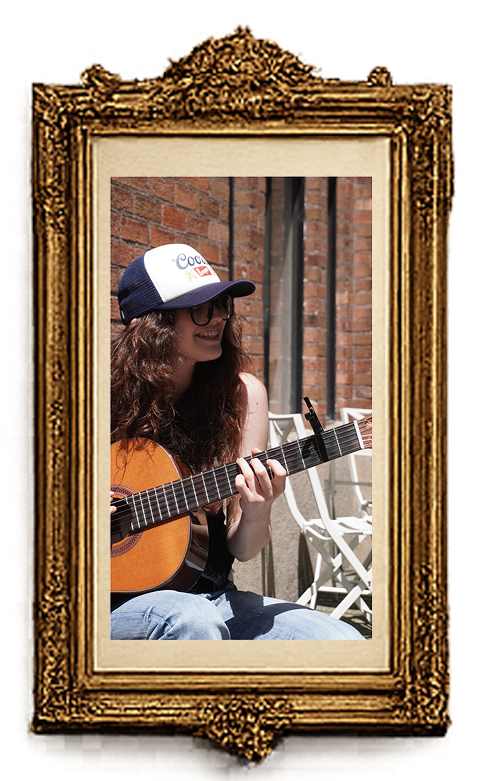

Mers
Songwriter
•
Composer
Lyricist
•
Producer


Mers is a songwriter, composer, lyricist, and creative producer whose work is rooted in storytelling, emotional authenticity, and artistic depth. Drawing from influences across genres, she blends evocative lyrics, expressive melodies, and thoughtful production into cohesive, narrative-driven experiences.
Whether writing intricate lyrics rich with imagery and layered meaning, composing music that highlights the capabilities of trained vocalists, or developing productions that expand intimate acoustic ideas into fully realized works, Mers approaches every stage of the creative process with a strong artistic vision. Her work is characterized by emotional resonance, literary sensibility, and a commitment to creating music that connects deeply with audiences while serving a larger story.
With experience spanning lyric writing, composition, and production, she specializes in bringing concepts to life from their earliest inspiration through their final artistic form.